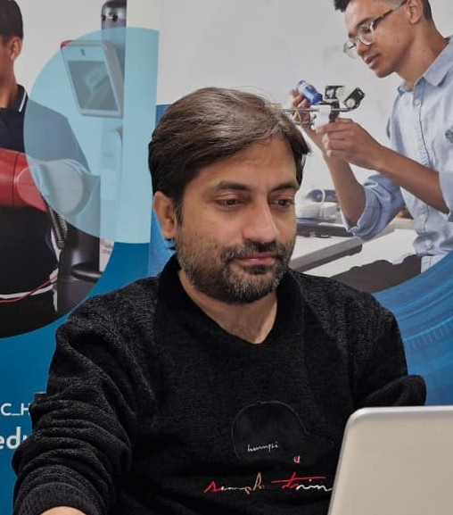

2026
GIAFormer: A Gradient-Infused Attention and Transformer for Pain Assessment with EDA-fNIRS Fusion
Information Fusion, Vol. 131, Article 104173, 2026.

Biomedical Signal Processing | Multimodal AI | Neurophysiological Decoding | Embedded & Real-Time AI
University of Canberra, Australia
I am a researcher working at the intersection of biomedical signal processing, multimodal artificial intelligence, neurophysiological decoding and intelligent healthcare systems. My research focuses on physiological and neurophysiological signal analysis, multimodal learning, wearable sensing, and embedded and real-time AI.
My research focuses on intelligent methods for analysing physiological and neurophysiological signals, with particular emphasis on multimodal learning, wearable sensing and real-time healthcare systems.
Processing and analysis of physiological and neurophysiological signals including EEG, fNIRS, EDA, PPG/BVP, ECG, EMG and PCG.
Multimodal learning, signal fusion, representation learning and deep learning for modelling complex physiological information.
Machine learning methods for decoding brain and body signals, temporal representation learning and subject-independent physiological modelling.
Lightweight machine learning, wearable biosensing and real-time physiological signal processing on embedded computing platforms.
Selected research contributions in biomedical signal processing, multimodal learning, neurophysiological sensing and objective pain assessment.
Information Fusion, Vol. 131, Article 104173, 2026.
Biomedical Signal Processing and Control, Vol. 112, Article 108532, 2026.
ACM Computing Surveys, Vol. 58, No. 2, pp. 1-35, 2025.
Computers in Biology and Medicine, Vol. 192, Article 110300, 2025.
Sensors, Vol. 24, No. 2, Article 458, 2024.